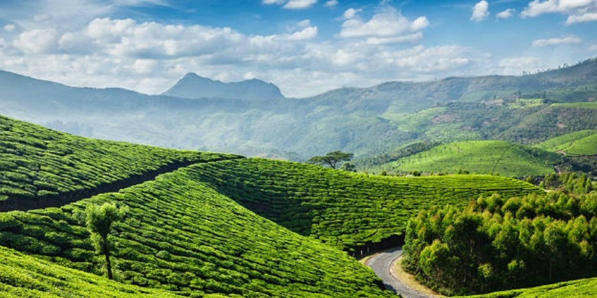

Flanked by the Arabian Sea in the West, the towering Western Ghats in the East and networked by 44 interconnected rivers, Kerala is blessed with a unique set of geographical features that have made it one of the most sought after tourist destinations in Asia. A long shoreline with serene beaches, tranquil stretches of emerald backwaters, lush hill stations and exotic wildlife, are just a few of the wonders that await you once you crossover to the other side. And what's more, each of these charming destinations is only a two hour drive from the other - a singular advantage no other place on the planet can offer. Kerala prides itself for being the flag bearer for not just how a culture can respect its past but also march forward with growth & progress as well. Hundred percent literacy, world-class health care systems, India's lowest infant mortality and highest life expectancy rates are among a few of the milestones that the people of the state are extremely proud of.
FIND US ON SOCIAL MEDIA